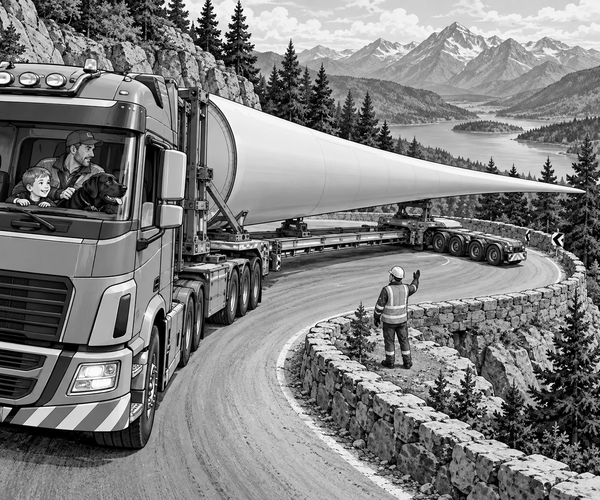

FICTION
The sun was just rising over Blackrock Mountain.
Tom climbed into the cab of Dad's heavy-haul truck.
Scout settled on a blanket behind the seats.
Outside, a giant white blade rested on a very long trailer.
The blade was wide at one end.
It became thinner all the way to its pointed tip.
It was going to the new wind turbine at the top of the mountain.
First, Dad walked around the load with the transport team.
They checked the padded supports beneath the blade.
They checked every strap.
They checked the many trailer tyres.
A small pilot van went ahead.
Its crew made sure the road was clear.
“Ready for the giant blade run?” Dad asked.
Tom grinned.
Scout thumped his tail.
The truck began to move.
It did not go fast.
A load this long needed space and time.
The first challenge was the village roundabout.
Dad steered the truck around the circle.
But the trailer could not simply follow like a small cart.
Lena, the trained rear-steering operator, watched from a safe place.
She used a control to turn the trailer's back wheels.
The front of the trailer went left.
The rear wheels turned right.
Slowly, the long trailer curled around the roundabout.
The blade stayed well away from the lamp posts.
“It bends like a giant snake,” Tom said.
Dad nodded.
“That steering lets a long load fit through a tight turn.”
Hauling fact: Some very long trailers have rear wheels that can steer separately. This helps them carry huge loads around bends.
Beyond the village, the road climbed into the pines.
The engine rumbled in a low gear.
Then the pilot van stopped.
A branch had fallen from a pine tree.
It reached into the road just before Blackrock Bend.
Dad stopped the truck on the straight part.
Workers cleared the branch while everyone else waited safely.
At last, the road was open.
Dad crept towards the bend.
A stone wall stood on one side.
A high rock face stood on the other.
Lena turned the rear wheels.
The back of the trailer swung gently into the wide part of the road.
Tom watched a black marker beside the final wheel.
“It is getting close to the wall,” he said.
Dad stopped at once.
Lena walked to a safer viewing point and checked the gap.
“Good spotting,” she called.
She changed the wheel angle.
Dad moved forwards at walking speed.
The rear wheels followed the open space.
The giant blade tip passed the rock face.
It did not touch.
The trailer rolled clear of Blackrock Bend.
Everyone cheered.
Scout gave one happy bark.
Wind fact: A wind-turbine blade is shaped a little like an aircraft wing. Moving air helps turn the blades, and the turbine makes electricity.
At the mountain top, a tall crane was waiting.
The team attached strong lifting straps.
The crane raised the blade from its padded supports.
It floated slowly through the air.
Tom watched it join the other blades high above the ground.
Soon, the finished turbine stood against the sky.
Dad switched off the truck.
“The biggest loads,” he said, “need the smallest, calmest moves.”
Tom looked back down the twisting road.
The giant blade run was complete.
1. Why could the trailer's rear wheels turn?
2. Why did Dad stop before Blackrock Bend?
3. What lifted the blade from the trailer?